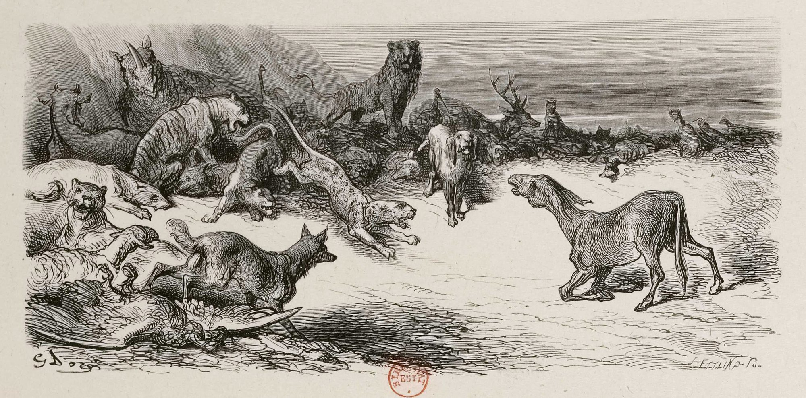
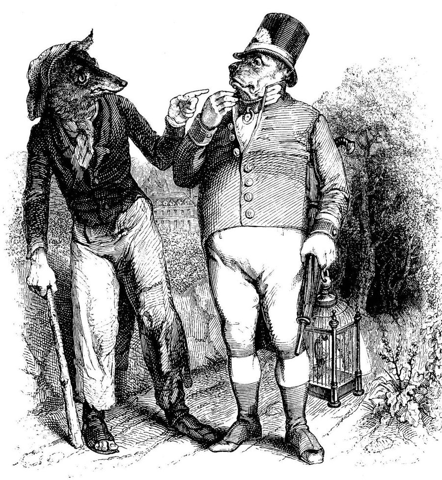
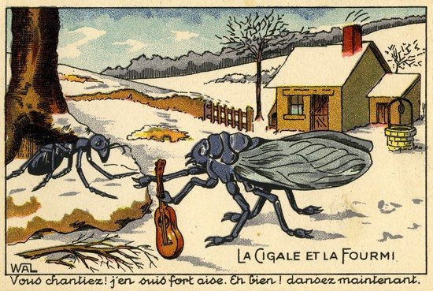

Le chêneetle roseau
Vingt et une fables de Jean de La Fontaine Eenentwintig fabels van Jean de La Fontaine Twenty-one fables by Jean de La Fontaine

Je plie, et ne romps pas.Le roseau, dans « Le chêne et le roseau » ‘Ik buig, maar breek niet.’ Het riet, in ‘De eik en het riet’ ‘I bend, but do not break.’ The reed, in ‘The Oak and the Reed’
Le spectacleDe voorstellingThe show
Un spectacle qui laisse la place aux textes, un auteur qui s’inscrit dans un temps universel, essentiel en tous lieux. Een voorstelling die de teksten de ruimte geeft, van een auteur die tijdloos is en overal van belang. A show that gives the texts room to breathe, by an author who belongs to every age and matters everywhere.
Depuis des siècles, Jean de La Fontaine continue de nous captiver ; on ne cesse de publier sur ce trésor de la littérature, et c’est aussi merveille de le lire et de l’ouïr. Vingt et une fables, dites par deux comédiens, Christophe Chaplet et Thierry Louyat, qui partagent avec le public ces tableaux vivants d’un des plus grands observateurs de la nature humaine.
Al eeuwenlang blijft Jean de La Fontaine ons boeien. Er verschijnt steeds weer nieuw werk over deze schat uit de literatuur, en het is een wonder om hem te lezen én te horen. Eenentwintig fabels, verteld door twee acteurs, Christophe Chaplet en Thierry Louyat, die deze levende taferelen van een van de grootste kenners van de menselijke natuur met het publiek delen.
For centuries Jean de La Fontaine has held us spellbound. New books on this treasure of literature keep appearing, and it is a marvel both to read him and to hear him. Twenty-one fables, spoken by two actors, Christophe Chaplet and Thierry Louyat, who share with the audience these living tableaux by one of the greatest observers of human nature.
À l’aide d’illustrations, de lectures et de musique, quelques aspects de la vie de Jean de La Fontaine et de son œuvre sont évoqués.
Met illustraties, voordrachten en muziek komen ook het leven en het werk van La Fontaine aan bod.
Through illustrations, readings and music, glimpses of La Fontaine’s life and work are woven in.
De voorstelling is in het Frans. De Nederlandse vertaling van alle fabels staat op deze site.
The show is performed in French. A Dutch translation of every fable is available on this site.
ExtraitsFragmentenExcerpts
Sur scèneOp het podiumOn stage
Programme du spectacleProgrammaProgramme
Vingt et une fablesEenentwintig fabelsTwenty-one fables
Deux lecturesTwee voordrachtenTwo readings
Épitaphe d’un paresseux · À l’enterrement d’une fourmi
IllustrationsIllustratiesIllustrations
Les fables en imagesDe fabels in beeldThe fables in pictures



ReprésentationsVoorstellingenPerformances
Sur les planchesGespeeldPerformed
Zeemansstraat 39b, Zaandam
Accueillir le spectacleDe voorstelling boekenBring the show to your venue
Théâtres, centres culturels, Alliances françaises, écoles : contactez-nous pour une représentation.
Theaters, culturele centra, Alliances Françaises, scholen: neem contact op voor een voorstelling.
Theatres, cultural centres, Alliances Françaises, schools: get in touch to arrange a performance.
Nous écrireNeem contact opGet in touch
Contact
Écrivez-nousSchrijf onsWrite to us
E-mailinfo@jeandelafontaine.site
TéléphoneTelefoonPhone+31 6 34 84 81 96